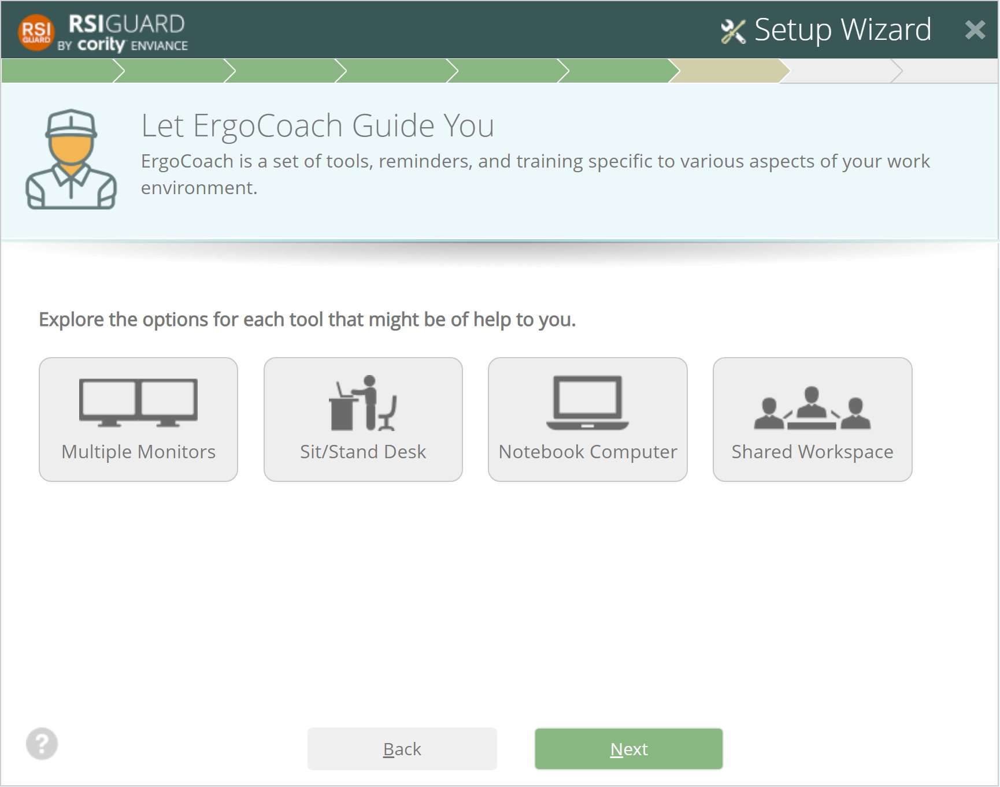
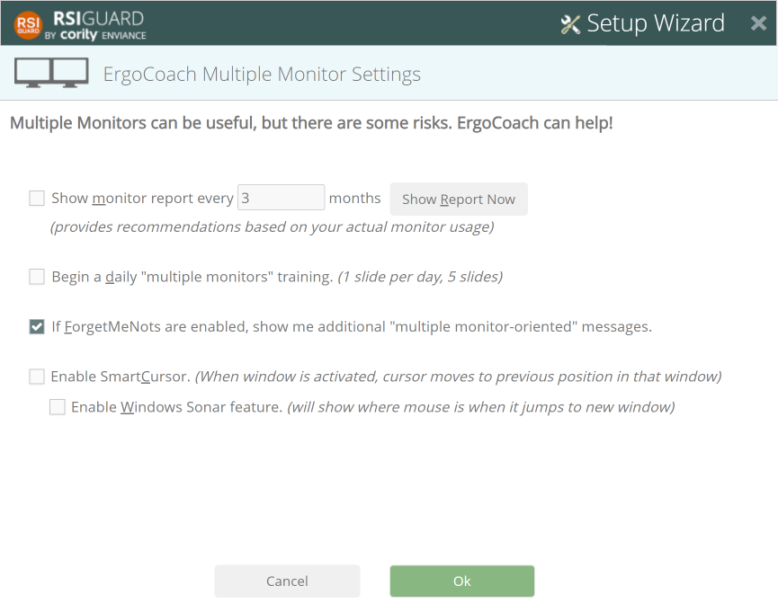

This part of the setup wizard lets you configure the ErgoCoach tools for multiple monitor use, sit/stand desks, notebook computers, and shared workspaces.
Click on each of the items that apply to your work environment.

Additional windows will appear for each of the 4 options to let you select special tools that can help you work more safely and more productively. For example, this is the Multiple Monitors window.
